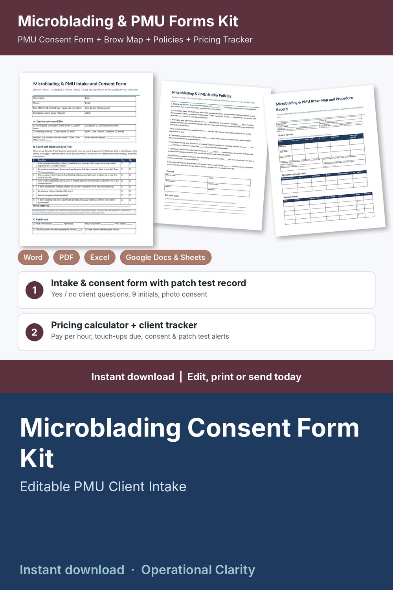

Microblading Consent Form Kit

Get the consent form, patch test record and shape approval on file, price every microblading session and touch-up so it pays you, and know when each client is due for a perfecting touch-up or color boost: a complete microblading and permanent makeup (PMU) forms kit with a working pricing calculator and client tracker, not just a few printable pages.
WHAT'S INSIDE
- Microblading & PMU Intake and Consent Form (Word + PDF, 2 pages): client details and ID / age check, service wanted (microblading, powder / ombre, combo brows, lip blush, lash line, touch-up, color boost), previous PMU on the area, simple yes / no client self-disclosure questions, patch test record or signed decline, 9 initialed acknowledgments (semi-permanent pigment, results vary, shape and color approved before starting, perfecting touch-up, studio policies agreed), consent and release, before / after photo consent, client and artist signatures, yearly review / update log.
- Microblading & PMU Brow Map and Procedure Record (Word + PDF, 2 pages): brow / lip map (start, arch, tail, shape notes, client approval initials), technique, skin type, pigment brand, color, lot number and expiry, blade / needle lots, session history, deposits and payments, before / after photo log.
- Microblading & PMU Studio Policies (Word + PDF): 9 ready-to-edit policies for deposits, consultation and patch tests, arriving for your appointment, late arrivals, cancellations and no-shows, perfecting touch-up window, color boosts and previous work by another artist, results and corrections, payments and right to refuse, plus a blank page for your own aftercare instructions.
- Microblading & PMU Service Menu & Price List (Word + PDF): editable menu with times and prices for brows, lips, lash line, touch-ups and consultations.
- Microblading & PMU Pricing Calculator & Client Tracker (Google Sheets / Excel, 6 tabs):
* Service Menu: minutes, product cost and your price for each first session, touch-up, color boost and consultation; suggested price from your target hourly pay, overhead and card fees; what you keep and your real pay per hour; BELOW SUGGESTED flag; rebook timing per service
* Settings: target pay, monthly overhead, booked hours, card fees, deposit % and minimum, rounding, and after how many days your studio asks for a new patch test (your own policy)
* Clients: contact details, brow / lip notes, consent form date, patch test date or "not needed / waived" mark, visits, total spent, next visit due (touch-up or color boost) and rebook alerts (REBOOK NOW / DUE SOON / BOOKED); no health information stored
* Appointments: service looked up from your menu, discounts, deposits, refunds, status, days since last visit, balances and alerts (CONSENT MISSING / PATCH TEST MISSING / BALANCE DUE / DEPOSIT DUE / SEND FORMS / PATCH TEST DUE / UPCOMING / UPDATE STATUS)
* Dashboard: service revenue, tips, product costs, card fees, what you keep, pay per hour worked, average ticket, no-show rate, deposits held, month-by-month and service-by-service tables, chart and a list of appointments that need attention
- START HERE guide (PDF)
HOW IT WORKS
1. Enter your target pay, overhead, card fees and patch test policy on Settings.
2. Add your services on the Service Menu tab, fix anything flagged BELOW SUGGESTED, and copy your prices into the printable menu.
3. Send new clients the policies and the Intake and Consent Form before their first session; note the consent date and patch test date on Clients.
4. Log each booking and deposit; price, time and product cost fill in automatically.
5. After each session, record payment and tip, log pigments and lot numbers on the Procedure Record, and watch the alerts for missing consent forms or patch tests, balances, deposits and clients due for a touch-up.
Example data (9 services, 14 sample clients, 25 appointments) shows how it all connects; delete it and type your own. Yellow cells = type here, green cells = calculated.
FORMATS
- Word .docx (edit in Microsoft Word, Google Docs, Pages or LibreOffice) + PDF, US Letter
- Excel .xlsx made for Google Sheets (also works in Excel and LibreOffice; no macros)
This is an instant digital download, no physical item will be shipped.
Editable template, not legal advice. Have it reviewed by a local attorney and check your state and local health department, body art and cosmetology rules (many states regulate permanent makeup as tattooing: licensing, minimum age, consent wording, client records) before you use it. The client questions are simple yes / no self-disclosures: information only, not a medical screening tool and not medical advice. No aftercare or medical advice is included; write your own aftercare page and follow your pigment manufacturer's instructions.